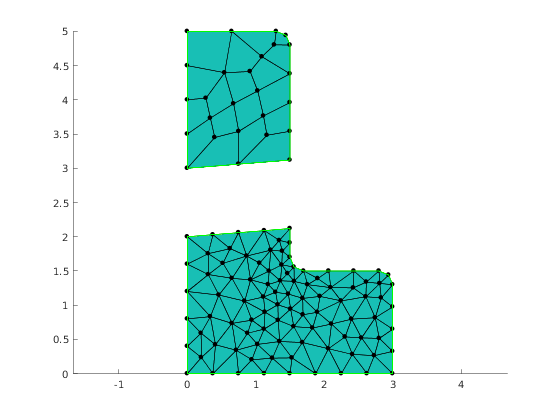
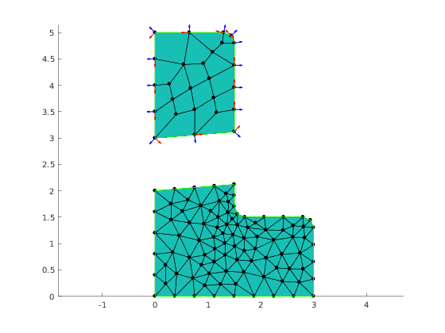

Show how to calculate normals at edges
Contents
Summary of the demo
This demo illustrates how to calculate tangent and normal vectors of edges and how to average it to vertices.
clear variables;
Create Mesher object
When Mesher object is created it takes care of initializing interface to GMSH mesh generator
mesher = mp.Mesher();
Create object describing geometric model
geom = mp.geoms.LShapeIfaceGeom('my_domain'); geom.params.dW = 3; geom.params.dH = 4; geom.params.dt = 1.5; % % Relative placement of interface endpoints. geom.params.fA = 0.5; geom.params.fB = 0.2; % Specify that desired type of element fo the upper subdomain in quad. geom.params.quads=[0,1]; % Get names of geometric regions to be later used in selective meshing % of regions. regs = geom.regions();
Prepare regions selectors
regT = [2,4,7,8]; regB = [1,3,5,6,8];
Generate mesh
mesh1 = mesher.generate(geom, struct('lc', 0.8, 'regionsToMesh', {regs(regT)})); mesh2 = mesher.generate(geom, struct('lc', 0.4, 'regionsToMesh', {regs(regB)})); mp.translateMesh(mesh1, [0,1,0]);
Visualize mesh
The simplest way to visualize mesh is to use Viewer class.
viewer = mp.Viewer(); viewer.show(mesh1); viewer.show(mesh2);
Edge data in elements
Caclulate edge flags, edge tangent vector and edge normal vector for each element
Create edges selector
The LShapeGeom geometric model distinguishes boundary endges as well as their subsets. Here we prepare selector that will assign tag 1 1 to ordinary boundary edges and tag 3 to interface edges.
bcSelector.d_subBottom = 0; bcSelector.d_subTop = 0; bcSelector.b_bottom = 1; bcSelector.b_left_top = 1; bcSelector.b_left_bottom = 1; bcSelector.b_other_bottom = 1; bcSelector.b_other_top = 1; bcSelector.i_interface = 3; % The use of Tagger is optional. Tagger object give the ability to precisely % specify which tags are assigned if mesh elements belongs to multile % regions. If one is not interested in such fine control it is enough to % use 'default' string in place of tagger argument. tagger = mp.Tagger('priority', [0,0; 1, 100; 2,50; 3,25]);
Get edges data in regions with id=1
tagsForVertexNormals = [1,3]; [elemEdgeTags, elemTan, elemNor, nodeTan, nodeNor] = mp_face_edge_data_at_regions(mesh1, tagsForVertexNormals, bcSelector, tagger);
Visualization normal and tangent vectors at nodes of the region edges with tag 1
% Plot arrows for tangent and normal vectors hold on; quiver(mesh1.nodes(:,1), mesh1.nodes(:,2), nodeTan(:,1), nodeTan(:,2), 0.3, 'LineWidth', 1, 'Color', 'red'); quiver(mesh1.nodes(:,1), mesh1.nodes(:,2), nodeNor(:,1), nodeNor(:,2), 0.3, 'LineWidth', 1, 'Color', 'blue');
Internal management of demo
mp_manage_demos('report', 'LShapeIfaceGeom_normals', true);